Two goals, one training loop: optimization makes the training loss small, regularization makes the model work on data it has never seen.
Module 7 · Lecture notes by Dr. Abdulkarim Albanna
Core Training ~60 minPrerequisites: Modules 3–6 (Neural-Network Foundations, Activation Functions and Backpropagation). Every method here is a variation on one idea — either change how we step down the loss surface, or change what we minimize so the model generalizes. References: Goodfellow, Bengio & Courville; Kingma & Ba (Adam); Srivastava et al. (Dropout).
Training a network means searching for the weights that make the loss as small as possible. The loss J(w) is a surface over the weight space; learning is the walk downhill to its lowest point. Gradient descent takes the derivative ∇J (the direction of steepest increase) and steps in the opposite direction:
η (eta) is the learning rate — how big each step is; ∇J is the gradient supplied by backpropagation. For a simple linear model the loss is convex (a single bowl) so we reach the global minimum. Deep networks are non-convex — many local minima and saddle points — which is exactly why smarter optimizers and regularizers matter.
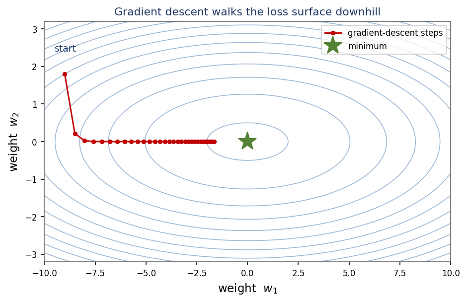
J(w) = w², so ∇J = 2w. Start w = 3, η = 0.1: gradient = 2·3 = 6, so w ← 3 − 0.1·6 = 2.4 (moved toward 0). Next step: g = 4.8 → w ← 2.4 − 0.48 = 1.92.
How many training examples do we look at before each weight update? That single choice defines the three classic variants.
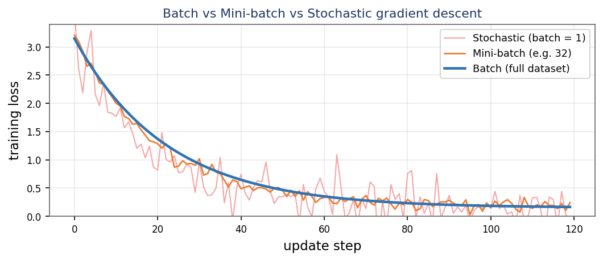
Key vocabulary. Batch size = examples per update. Iteration = one weight update. Epoch = one full pass over the training set.
Dataset = 1,000 samples, batch size = 100: iterations per epoch = 1000 / 100 = 10. After 5 epochs the weights were updated 5·10 = 50 times.
The learning rate η scales every step. Get it wrong and nothing else matters:
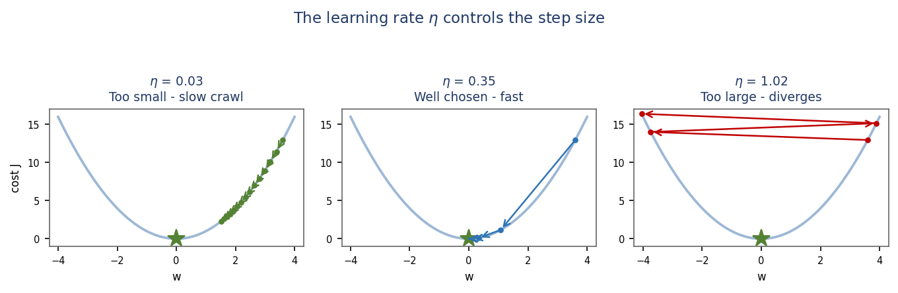
η by 10×. Typical starting points: 0.1 for plain SGD, 0.001 for Adam. (From Dr. Albanna's course notes.)J(w) = w² (∇J = 2w), start w = 1. With η = 0.1: w ← 1 − 0.1·2 = 0.8 (good). With η = 1.1: w ← 1 − 1.1·2 = −1.2 — |w| grew from 1 to 1.2, so it diverges.
Plain SGD zig-zags across steep, narrow valleys (ravines) and crawls along the shallow direction. Momentum fixes this by accumulating a velocity — an exponentially-weighted average of past gradients:
Consistent directions build up speed; oscillating directions cancel out. Like a ball rolling downhill, it powers through small bumps and flat regions. Nesterov Accelerated Gradient (NAG) is a smarter variant that evaluates the gradient at the look-ahead position w + βv — it “looks before it leaps” and corrects sooner.
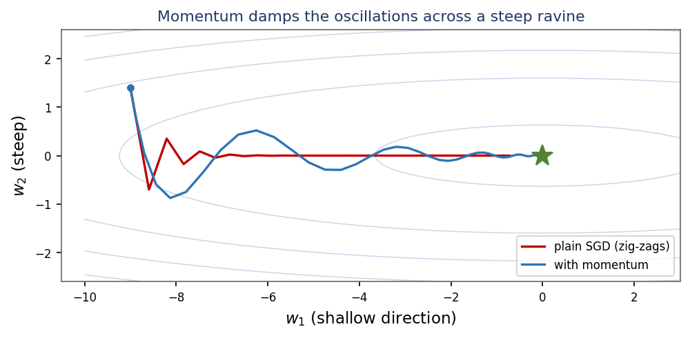
β = 0.9 means each step keeps 90% of the previous velocity. With a constant gradient g the velocity settles at g/(1−β) = 10g — a 10× effective speed-up along steady directions. (From Dr. Albanna's course notes.)β = 0.9, constant gradient g = 1, v₀ = 0 (using v ← βv + g): v₁ = 0.9·0 + 1 = 1; v₂ = 0.9·1 + 1 = 1.9; v₃ = 0.9·1.9 + 1 = 2.71 — the velocity grows toward the steady value 10.
Instead of one global η, give each weight its own effective learning rate based on the size of its recent gradients. Weights with large gradients get smaller steps; rarely-updated weights get larger steps.
Great for sparse features, but the cache only grows, so the effective step keeps shrinking and learning can stop prematurely.
By forgetting old gradients (β ≈ 0.9), RMSProp keeps a healthy step size and works well on non-stationary, non-convex deep networks. ε (~1e-8) is a tiny constant that prevents division by zero.
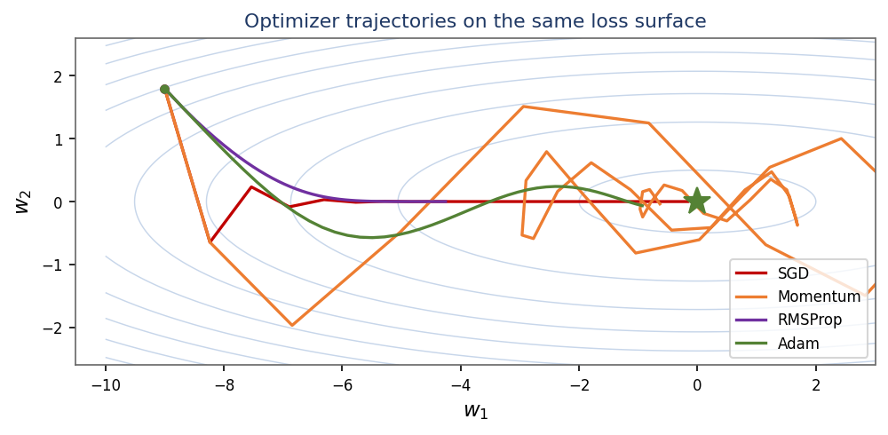
AdaGrad, η = 0.5, one weight, gradients g = 3, 1, 1: cache 9 → 10 → 11. Steps: 0.5·3/√9 = 0.5; 0.5·1/√10 ≈ 0.158; 0.5·1/√11 ≈ 0.151 — the effective learning rate shrinks over time.
Adam (Adaptive Moment Estimation) combines the two best ideas: momentum (first moment m) and RMSProp's adaptive scaling (second moment v).
Because m and v start at 0 they are biased toward 0 early on, so Adam applies a bias correction:
Defaults that “just work”: β₁ = 0.9, β₂ = 0.999, η = 0.001, ε = 1e-8. AdamW is the recommended refinement: it applies weight decay (Section 12) separately from the adaptive step, which generalizes better and is now standard for training transformers.
| Advantages | Limitations |
|---|---|
| Fast, robust convergence out of the box | More memory (stores m and v per weight) |
| Per-parameter adaptive step sizes | Can generalize slightly worse than tuned SGD+momentum |
| Little learning-rate tuning needed | Plain Adam mishandles weight decay — use AdamW |
| Works well on sparse and noisy gradients | — |
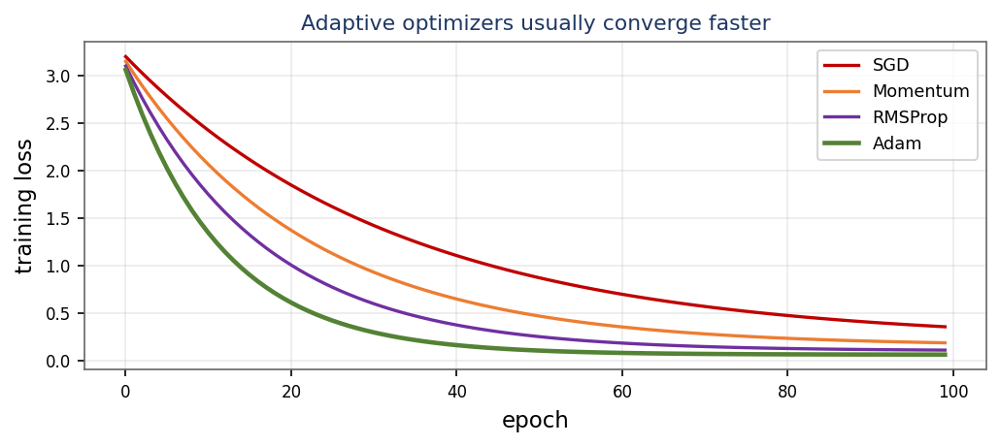
Adam, first step (t = 1), g = 0.1, m = v = 0, defaults: m = 0.1·0.1 = 0.01 → m̂ = 0.01/(1−0.9) = 0.1; v = 0.001·0.01 = 1e-5 → v̂ = 1e-5/(1−0.999) = 0.01; step = 0.001·0.1/√0.01 = 0.001.
Even with a good optimizer, the best learning rate changes during training: large early to move fast, small late to settle into the minimum. A schedule lowers η over time.
η by a factor (e.g. ×0.5) every k epochs.η = η₀ · e−kt — a smooth continuous drop.η follows a half-cosine from η₀ down to 0 — very common in modern training.η and ramp up for the first few hundred steps before decaying. It stabilizes early training, especially for Adam and transformers.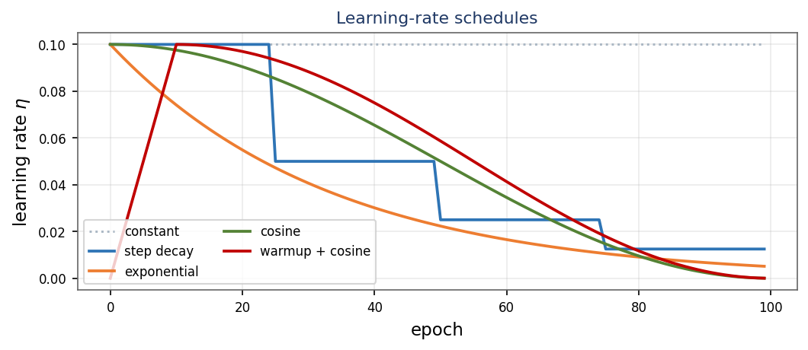
Step decay, η₀ = 0.1, ×0.5 every 10 epochs. At epoch 25 it has dropped ⌊25/10⌋ = 2 times, so η = 0.1 · 0.5² = 0.025.
Where training starts matters. Initialize all weights to the same value and every neuron learns the same thing (broken symmetry); make them too big or too small and the signal explodes or vanishes as it passes through the layers. The fix: random weights scaled so the variance of activations stays roughly constant from layer to layer.
He initialization accounts for ReLU zeroing out half the inputs, so it is the default for modern ReLU networks.
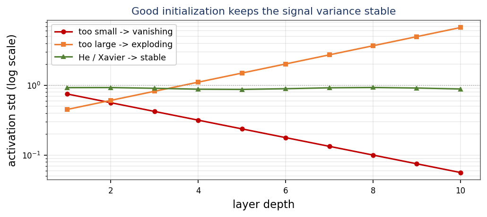
Layer with nin = 100 inputs. Xavier std ≈ √(1/100) = 0.1; He std = √(2/100) = √0.02 ≈ 0.141 (He is larger, compensating for ReLU killing half the signal).
In deep or recurrent networks, gradients are products of many terms. They can vanish (→ 0, so early layers stop learning) or explode (→ ∞, so the loss becomes NaN). Partial fixes for vanishing: ReLU-family activations, careful initialization (Section 8), residual connections, batch/layer norm. The standard fix for exploding gradients is gradient clipping — cap the gradient's norm before the update:
The direction is preserved; only the oversized magnitude is shrunk to the threshold c.
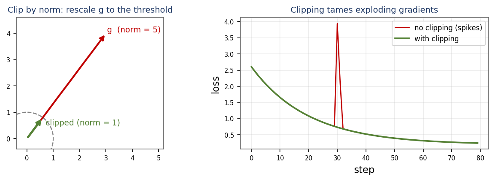
Gradient g = [3, 4], threshold c = 1. ‖g‖ = √(9+16) = 5; scale = c/‖g‖ = 1/5 = 0.2; g ← [3, 4]·0.2 = [0.6, 0.8], new norm 1.
As weights change, the distribution of each layer's inputs keeps shifting (“internal covariate shift”), which slows training. Batch Normalization normalizes each feature across the mini-batch to mean 0, variance 1, then rescales it with two learnable parameters γ and β:
γ and β let the network undo the normalization if that is actually better — it keeps full expressive power.
| Advantages | Limitations |
|---|---|
| Allows much higher learning rates | Behaves differently in train vs test (running stats) |
| Faster, more stable convergence | Weak for very small batches |
| Acts as a mild regularizer (batch noise) | Awkward for RNNs / variable-length sequences |
| Reduces sensitivity to initialization | — |
Layer Normalization normalizes across the features of one example instead of across the batch — batch-size independent, so it is the norm of choice for RNNs and transformers.
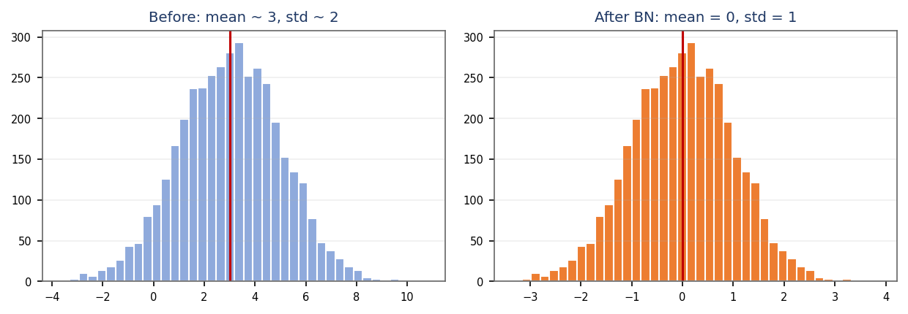
γ, β restore flexibility. (From Dr. Albanna's course notes.)Batch x = [2, 4, 6, 8]: μ = 5, σ² = 5, σ ≈ 2.236. Normalize x = 2: (2−5)/2.236 = −1.342; x = 8: (8−5)/2.236 = +1.342.
Optimization makes the training loss small. Regularization makes the model work on unseen data — the two goals are different.
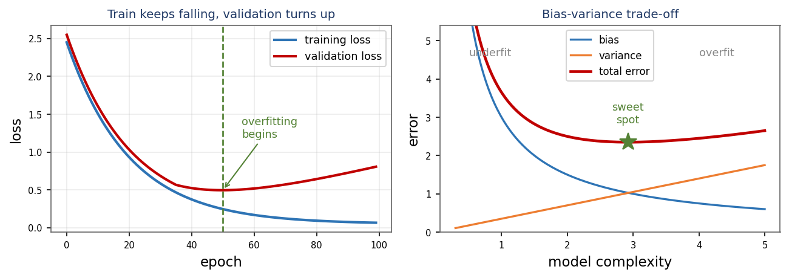
A model reports training accuracy 99%, validation 72%. The large gap (27 points) → overfitting. Remedy: more data, or regularization (Sections 12–14).
Add a penalty on large weights to the loss, so the optimizer is pushed toward smaller, smoother weights that generalize better.
Every step multiplies the weight by a factor just below 1 — hence the name weight decay. It shrinks weights toward (but not exactly to) zero.
L1 pushes many weights to exactly zero, producing a sparse model that effectively selects features. The geometry (diamond vs circle) is why L1 lands on the axes.
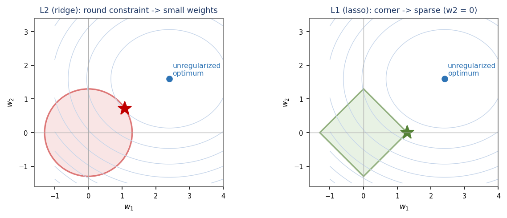
w₂ = 0) — sparsity. λ is the regularization strength: larger → smaller weights → smoother model, but too large under-fits. (From Dr. Albanna's course notes.)L2, w = 0.8, η = 0.1, λ = 0.5, data gradient g = 0: w ← (1 − 2·0.1·0.5)·0.8 = (1 − 0.1)·0.8 = 0.72 (decayed toward 0).
During training, randomly switch off each neuron with probability p (e.g. 0.5) on every forward pass. The network can never rely on any single unit, so it learns redundant, robust features — like training a huge ensemble of sub-networks that share weights.
At test time all units are active, so their outputs must be scaled to match the training expectation. Inverted dropout (the standard) instead scales the kept units by 1/(1−p) during training, leaving test-time code unchanged.
| Advantages | Limitations |
|---|---|
| Strong, cheap regularizer for large FC layers | Slows convergence (needs more epochs) |
| Approximates an ensemble of many networks | Less used in conv layers (BN often preferred) |
| Reduces co-adaptation of neurons | Must be turned off at inference |
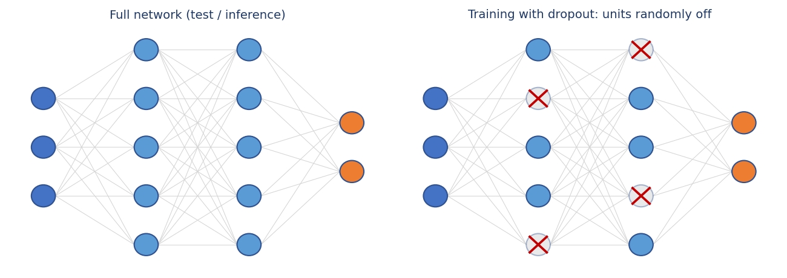
Layer of 10 units, dropout p = 0.5: on average 5 units stay active each pass. Inverted dropout, keep prob 0.8, activation a = 2.0: kept units scaled by 1/0.8 = 1.25 → 2.0·1.25 = 2.5.
Watch the validation loss while training. When it stops improving for a set number of epochs (the patience), stop and keep the weights from the best epoch. Free regularization — it simply avoids the over-training regime.
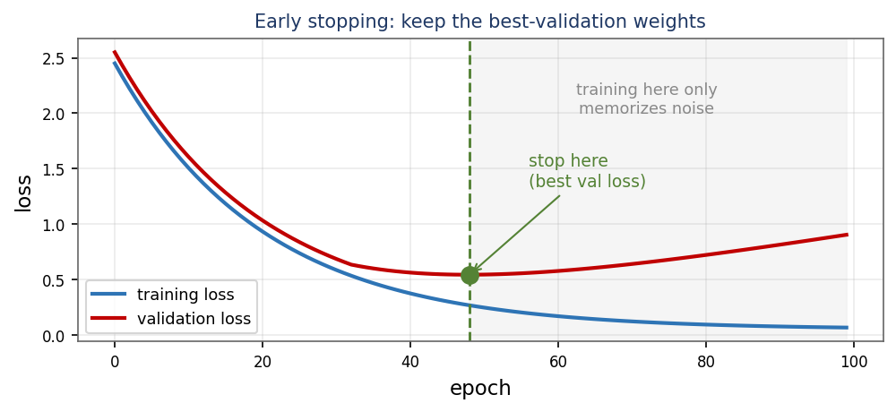
The best cure for overfitting is more data. When you cannot collect more, synthesize it by label-preserving transforms: for images — random crops, flips, rotations, brightness/contrast jitter, cutout; for text — synonym swaps, back-translation; for audio — time-shift, noise, pitch-shift. Each epoch the model sees slightly different inputs, so it learns the invariances that matter and memorizes less.
Validation loss by epoch: 0.9, 0.7, 0.6, 0.58, 0.60, 0.63. Best is epoch 4 (0.58). With patience 2, epochs 5–6 fail to improve → stop and restore epoch 4.
η = 0.001. Switch to tuned SGD+momentum if you need the last bit of generalization.η, add gradient clipping, check initialization.| Symptom | Likely cause | What to try |
|---|---|---|
| Loss = NaN / inf | Exploding gradients, η too high | Lower η, gradient clipping |
| Loss barely moves | η too small / vanishing | Raise η, ReLU + He init, BN |
| Train good, val bad | Overfitting | More data, L2, dropout, early stop |
| Train & val both bad | Underfitting (high bias) | Bigger model, train longer, less reg. |
| Loss zig-zags | η too high / steep ravine | Momentum / Adam, lower η |
Model: train loss 0.05, val loss 0.9, rising after epoch 20. Diagnosis: overfitting. Recipe: early stopping ~epoch 20 + dropout/L2 + augmentation.
| Method | Core update | When to use |
|---|---|---|
| SGD | w ← w − η g | Baseline; well-tuned generalizes well |
| Momentum | v ← βv − ηg ; w ← w + v | Ravines, consistent gradients |
| RMSProp | cache ← βcache+(1−β)g² | Non-stationary, RNNs |
| Adam / AdamW | momentum + RMSProp + bias correction | Default first choice |
| L2 / weight decay | w ← (1−2ηλ)w − ηg | Smoother weights, less overfit |
| L1 / lasso | J += λΣ|w| | Sparse / feature selection |
| Dropout | randomly zero units (prob p) | Large fully-connected layers |
| BatchNorm | normalize batch, then γ·x̂ + β | CNNs; faster, higher η |
| Early stopping | halt at best validation loss | Almost always |
Sixteen homework problems, one per section — the “solve it at home” column from the notes. Work each on paper, then reveal the worked solution from the answer key.
J(w) = w², start w = −2, η = 0.25. Perform two gradient-descent steps. Which value is w approaching, and why?
∇J = 2w. Step 1: g = 2·(−2) = −4 → w = −2 − 0.25·(−4) = −2 + 1 = −1. Step 2: g = 2·(−1) = −2 → w = −1 − 0.25·(−2) = −1 + 0.5 = −0.5. w is approaching 0, the minimum of J(w) = w² (each step halves the distance to it).
Dataset = 50,000 samples, mini-batch = 250. How many iterations make one epoch? How many weight updates in 20 epochs?
Iterations per epoch = 50,000 / 250 = 200. Weight updates in 20 epochs = 200 × 20 = 4,000. (One iteration = one mini-batch = one weight update.)
J(w) = w², start w = 4. (a) one step with η = 0.5; (b) one step with η = 0.9. Which converges, which oscillates?
∇J = 2w = 8 at w = 4. (a) η = 0.5: w = 4 − 0.5·8 = 0 — lands exactly on the minimum in one step. (b) η = 0.9: w = 4 − 0.9·8 = 4 − 7.2 = −3.2 — overshoots to the other side; |w| goes 4 → 3.2. (a) converges cleanly; (b) oscillates around 0 but still converges because |1 − 2η| = 0.8 < 1.
β = 0.9, constant gradient g = 2, v₀ = 0. Compute v₁, v₂, v₃ (use v ← βv + g). What is the steady-state velocity g/(1−β)?
v₁ = 0.9·0 + 2 = 2; v₂ = 0.9·2 + 2 = 3.8; v₃ = 0.9·3.8 + 2 = 5.42. Steady state: v = g/(1 − β) = 2/0.1 = 20 — a 10× amplification along a consistent gradient direction.
η = 0.1, β = 0.9, constant g = 1, cache₀ = 0. Compute cache₁ and the first step. As cache → 1, what does the step approach?
cache₁ = 0.9·0 + 0.1·1² = 0.1. First step = η·g/√cache₁ = 0.1·1/√0.1 = 0.1/0.316 ≈ 0.316. The steady cache equals g² = 1, so the step approaches η·1/√1 = 0.1 — RMSProp settles to a stable effective step (it does not keep shrinking like AdaGrad).
Second step (t = 2), g = 0.1, starting from m = 0.01, v = 1e-5. Compute m, v, the bias-corrected m̂, v̂ (use 1−0.9² = 0.19, 1−0.999² ≈ 0.002) and the update. Is the step still ≈ 0.001?
m = 0.9·0.01 + 0.1·0.1 = 0.009 + 0.01 = 0.019; m̂ = 0.019/(1 − 0.9²) = 0.019/0.19 = 0.1. v = 0.999·1e-5 + 0.001·0.01 ≈ 2.0e-5; v̂ = 2.0e-5/(1 − 0.999²) ≈ 2.0e-5/0.002 = 0.01. Update = 0.001·0.1/√0.01 = 0.001·0.1/0.1 = 0.001 — yes, still ≈ 0.001. Bias correction keeps the early steps near η instead of near 0.
Exponential decay η = η₀·e−kt, η₀ = 0.1, k = 0.1. Compute η at t = 10 and t = 20. (Use e−1 ≈ 0.368, e−2 ≈ 0.135.)
t = 10: η = 0.1·e−1 = 0.1·0.368 = 0.0368. t = 20: η = 0.1·e−2 = 0.1·0.135 = 0.0135. The learning rate has dropped to ~37% after 10 epochs and ~14% after 20 — large early, small late.
A layer has nin = 256, nout = 64. Compute the He std √(2/256) and the Xavier-uniform limit √(6/(256+64)). Which scheme fits a ReLU layer?
He std = √(2/256) = √0.0078 ≈ 0.088. Xavier-uniform limit = √(6/(256+64)) = √(6/320) = √0.01875 ≈ 0.137. He initialization fits a ReLU layer — it accounts for ReLU zeroing half the inputs; Xavier is for tanh/sigmoid.
Gradient g = [6, 8, 0], threshold c = 2.5. Compute ‖g‖, the scale factor and the clipped gradient. Did the direction change?
‖g‖ = √(6² + 8² + 0) = √100 = 10. Scale = c/‖g‖ = 2.5/10 = 0.25. Clipped g = [6, 8, 0]·0.25 = [1.5, 2, 0], whose norm is √(2.25 + 4) = 2.5 ✓. The direction is unchanged — clipping multiplies by a positive scalar, so only the magnitude shrinks.
Batch x = [1, 2, 3, 4]. Compute μ, σ², σ. Normalize x = 4, then apply γ = 2, β = 1 to get y.
μ = (1+2+3+4)/4 = 2.5. σ² = ((1.5)²+(0.5)²+(0.5)²+(1.5)²)/4 = 5/4 = 1.25, so σ ≈ 1.118. x̂ = (4 − 2.5)/1.118 = 1.5/1.118 = 1.342. y = γ·x̂ + β = 2·1.342 + 1 = 3.684.
Classify each and give one fix: (a) train 80%, val 78%; (b) train 99%, val 85%. Which needs more capacity, which needs regularization?
(a) 80 / 78: both low and close → underfitting (high bias). Fix: a bigger model / train longer — it needs more capacity. (b) 99 / 85: tiny training error, 14-point gap → overfitting (high variance). Fix: more data, L2, dropout, early stopping — it needs regularization.
w = 1.0, η = 0.1, λ = 1, data gradient g = 0.2. Compute the L2 update w ← (1−2ηλ)w − ηg. Then the L1 update (penalty gradient λ·sign(w) = 1).
L2: w = (1 − 2·0.1·1)·1 − 0.1·0.2 = 0.8 − 0.02 = 0.78. L1: w = w − η(g + λ·sign(w)) = 1 − 0.1·(0.2 + 1) = 1 − 0.12 = 0.88. L2 shrinks proportionally (removes 0.2·w), so it pulls big weights harder; L1 removes a constant 0.1 each step, which is what drives small weights all the way to exactly 0 (sparsity).
Activations [1, 2, 3, 4], p = 0.25, mask keeps units 1, 3, 4 (drops unit 2). Apply inverted dropout (scale 1/(1−0.25)) to the kept units. If p = 0.4 over 20 units, how many stay active on average?
Scale = 1/(1 − 0.25) = 1/0.75 = 1.333. Output = [1·1.333, 0, 3·1.333, 4·1.333] = [1.333, 0, 4.0, 5.333] (dropped unit → 0). The 1.333× scaling keeps the expected sum the same as with no dropout. p = 0.4 over 20 units: average active = 20·(1 − 0.4) = 12 units.
Patience = 3. Validation loss by epoch: 1.0, 0.8, 0.7, 0.72, 0.69, 0.71, 0.73, 0.74. At which epoch is the best model? At which epoch does training stop? Name two augmentations for an image classifier.
Best (lowest) validation loss = 0.69 at epoch 5. After epoch 5 the loss fails to improve for epochs 6, 7, 8 — 3 consecutive fails = patience → stop at epoch 8 and restore the epoch-5 weights. Two image augmentations: e.g. random horizontal flip and random crop (also valid: rotation, color jitter, cutout).
A transformer's loss becomes NaN after a few hundred steps. List three fixes in order. Which normalization and which optimizer would you use here?
1. Lower the learning rate (and add warmup so early steps are tiny). 2. Add gradient clipping (clip-by-norm) to stop exploding gradients. 3. Check initialization / data (and use loss scaling if mixed precision). Normalization: LayerNorm (batch-size independent, standard for transformers). Optimizer: AdamW.
In one sentence each: why (a) momentum helps in a ravine, (b) Adam needs bias correction, (c) L1 gives sparse weights, (d) dropout is disabled at test time.
(a) Momentum accumulates velocity in the consistent shallow direction while the oscillating steep-direction gradients cancel, so it accelerates toward the minimum. (b) m and v start at 0, biasing the early estimates toward 0; dividing by (1 − βt) rescales them to unbiased values. (c) The |w| penalty has a constant-magnitude gradient (±λ) that pushes weights all the way to exactly 0 (its diamond constraint touches the axes). (d) At test time we want the full deterministic network (the ensemble average); with inverted dropout the training-time scaling already fixed the magnitudes, so no units are dropped.
Implement every optimizer and regularizer from this module in PyTorch on the companion practice site TorchCode — “like LeetCode, but for tensors”: instant feedback, reference solutions, no GPU needed.
| Module section | TorchCode problem | What you will implement |
|---|---|---|
| 1–3. Gradient descent | Linear Regression | MSE cost + a manual gradient-descent step |
| 4. Momentum | SGD with Momentum | velocity accumulation from scratch |
| 5. Adaptive | RMSProp · AdaGrad | decaying vs accumulated squared-gradient cache |
| 6. Adam | Adam Optimizer | moments + bias correction, step by step |
| 7. Schedules | Cosine LR Scheduler | warmup + cosine annealing |
| 8. Init | Kaiming Weight Init | He/Xavier scaling done right |
| 9. Clipping | Gradient Clipping | clip-by-norm to tame exploding gradients |
| 10. BatchNorm | Batch Normalization · Layer Normalization | normalize + learnable gamma, beta |
| 12. Weight decay | L2 Weight Decay | the (1−2ηλ) shrink term |
| 13. Dropout | Dropout | inverted dropout, train vs eval |
| 2. Big batches | Gradient Accumulation | large effective batches on small hardware |
This module is the training toolbox for everything that follows — the same optimizers and regularizers train convolutional networks, recurrent networks and transformers. The best next move is to implement them yourself on TorchCode: the suggested path is Linear Regression → Momentum → RMSProp → Adam → Weight Init → Dropout → BatchNorm, then a full training-loop project end to end.